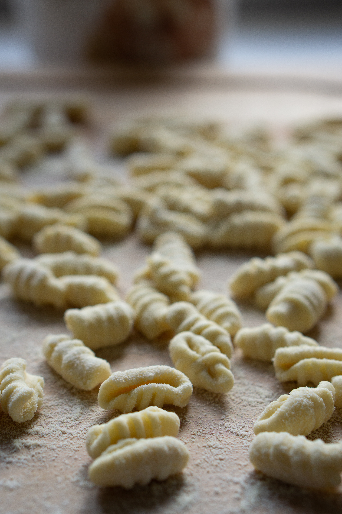

Gnocci recipe
Gnoccis



Gnocchi are a type of Italian dumpling made with potatoes, flour, and eggs.
They have a soft and pillowy texture and are typically served with a sauce or topped with cheese or herbs.
Gnocchi can be shaped by hand or with a fork to create ridges that help hold onto the sauce.
They can be made with just a few simple ingredients and can be boiled in minutes,
making them a quick and easy meal option. Overall, gnocchi are a classic Italian dish that are both delicious and versatile.
Ingredients
- 2 lbs russet potatoes
- 1 cup all-purpose flour
- 1 egg, lightly beaten
- Salt, to taste
- Optional: grated Parmesan cheese or chopped fresh herbs for serving
- Boil the potatoes in salted water until they are tender, about 20 minutes.
- Drain the potatoes and let them cool until they can be handled.
- Peel the potatoes and pass them through a potato ricer or a fine-mesh sieve onto a floured work surface.
- Make a well in the center of the potatoes and add the flour and egg. Season with salt to taste.
- Knead the ingredients together until a smooth dough forms. You can add more flour if the dough is too sticky.
- Divide the dough into 4 equal portions. Roll each portion into a long rope about 1 inch thick. Cut the rope into 1-inch pieces.
- To shape the gnocchi, use a fork or your thumb to make a small indentation on each piece and press down gently to create a ridged surface.
- Boil the gnocchi in salted water until they float to the surface, about 2-3 minutes.
- Serve the gnocchi with your favorite sauce, grated parmesan cheese, or chopped fresh herbs.
- Oh empanada, wrapped in crust and love,
- A delicious treat from heaven above.
- Stuffed with meat, cheese, and all the spices,
- A flavor that surely entices.
- Golden brown, crispy, and oh so warm,
- Perfect for a hungry belly to disarm.
- With each bite, your taste buds will dance,
- Leaving you with a smile and a chance
- To enjoy this culinary delight,
- From dawn to dusk, day and night.
- So let's raise a fork and give a cheer,
- To the empanada, truly a feast fit for a king, my dear!
- Dulces como el amor, suaves como un beso,
- las empanadas argentinas son un manjar del cielo.
- Con su masa crocante y su relleno caliente,
- son la promesa de una noche inolvidable y contente.
- Cada mordida es un viaje al corazón de Argentina,
- donde la comida y el amor son parte de la vida.
- Compartir una empanada es compartir un pedazo de alma,
- un momento íntimo y romántico, sin paralelo.
- Así como las empanadas nunca pierden su sabor,
- nuestro amor también perdurará, hoy y siempre, amor.
- Juntos comeremos, sin ningún tipo de temor,
- las empanadas que nos hacen soñar con amor.